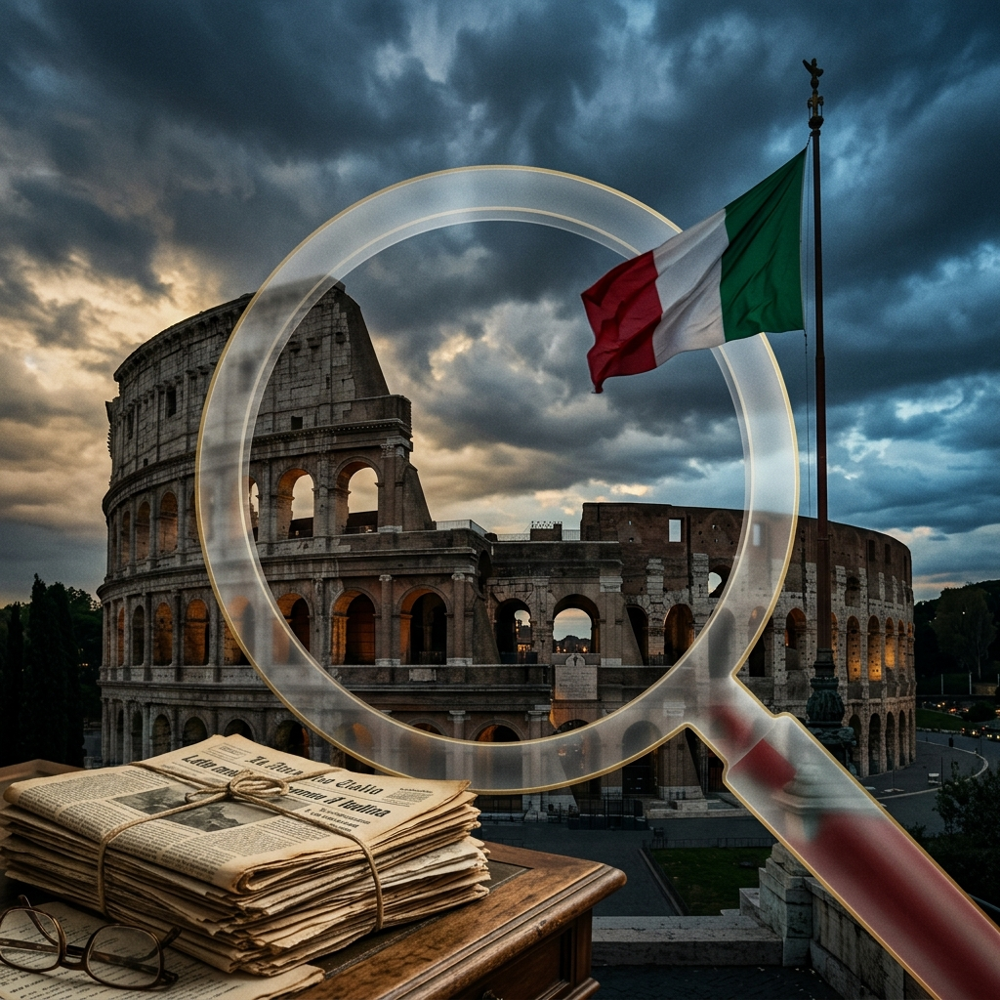

Dossier: Crisi Petrolifera e Piano Mattei
Brent al picco di $118, ora sui $95-97. Blocco CENTCOM ai porti iraniani, missione Meloni nel Golfo, analisi JP Morgan e Goldman Sachs. Il dossier verificato al 15 aprile 2026.
Leggi il Dossier →La Verità oltre la Propaganda
Archivio · Aprile 2026
Brent al picco di $118, ora sui $95-97. Blocco CENTCOM ai porti iraniani, missione Meloni nel Golfo, analisi JP Morgan e Goldman Sachs. Il dossier verificato al 15 aprile 2026.
Leggi il Dossier →165 miliardi di crediti generati, solo 25 compensati. Corte dei Conti e Bankitalia parlano di «disastro annunciato». L'analisi completa con tutti i numeri, le frodi e le fonti.
Leggi i Fatti →Un'analisi cruda e senza filtri sui reali e crescenti indici di criminalità all'interno delle città italiane. I numeri che i media tradizionali ignorano.
In Arrivo →Famiglia, tradizione, onore. Perché i valori del mondo classico sono oggi l'unico e vero baluardo contro il declino morale contemporaneo.
In Arrivo →"Fortes fortuna iuvat" - La fortuna aiuta gli audaci.
Ogni affermazione verificata con fonti istituzionali. Corte dei Conti, Bankitalia, ISTAT: noi citiamo, non inventiamo.
Valorizziamo le radici culturali italiane e la tradizione classica come fondamento della società moderna.
Grafici, dati macro, analisi tecnica. Smontare la propaganda economica è il nostro mestiere quotidiano.
Nessun partito, nessun editore, nessun padrone. Solo fatti, dati e il coraggio di raccontarli.
Perché siamo stanchi delle narrazioni preconfezionate.
Perché ogni giorno ci raccontano una realtà che non esiste.
Siamo una testata giornalistica indipendente, nata dalla convinzione che l'informazione è un diritto, non un privilegio. Analizziamo i fatti con rigore, citiamo le fonti, smontiamo le bugie — quelle dei governi, dei media mainstream e di chiunque manipoli la verità.
Le nostre radici sono italiane, i nostri valori sono conservatori, il nostro metodo è scientifico. Non ci interessa piacere: ci interessa essere precisi.
